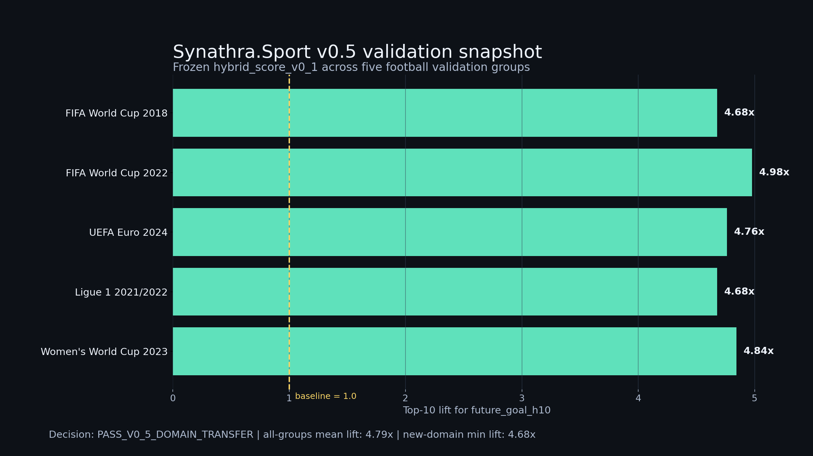
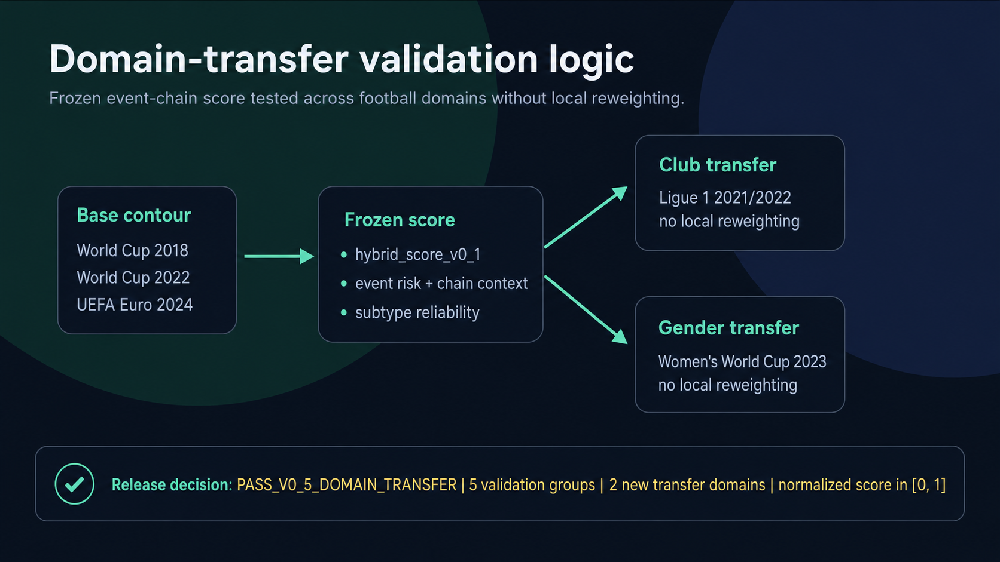
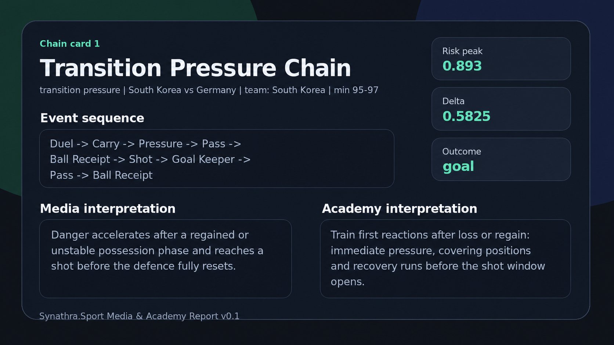
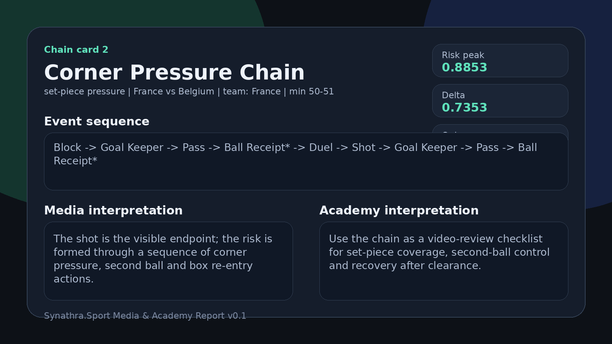
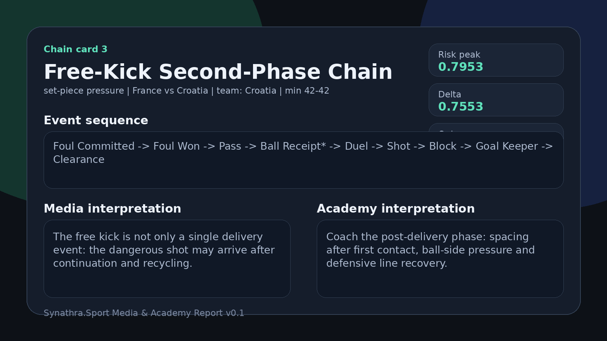
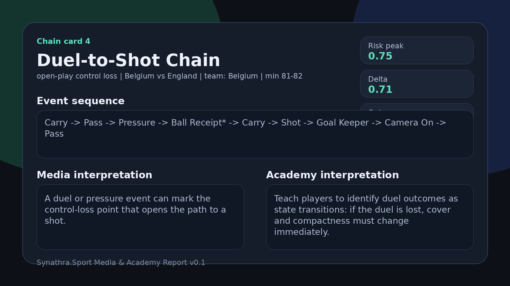
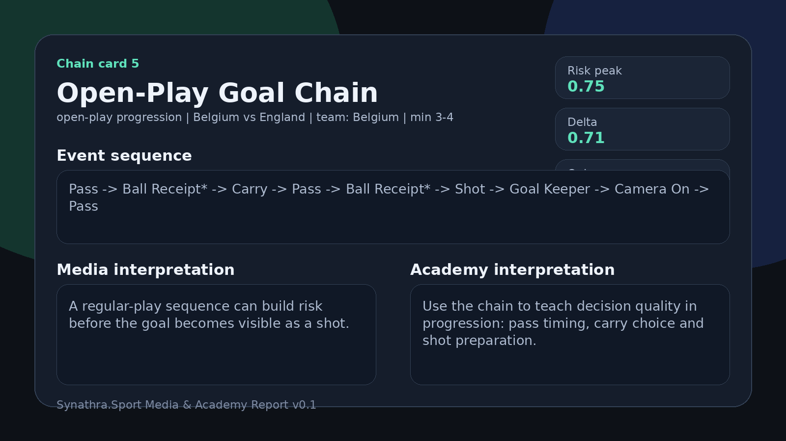

5
validation groups
Synathra.Sport Media & Academy Report v0.1
A media and academy-oriented event-chain risk report based on the Synathra.Sport v0.5 public validation release.
Executive summary
Synathra.Sport v0.5 is best read as an explainable event-chain risk layer for football event streams. It ranks and explains short event contexts that can precede visible danger such as shots, high-xG shots, and goals. The report is designed for media and academy use: readable enough for football storytelling, structured enough for coach education.
This report does not claim final-score prediction, bookmaker pricing, or universal tactical recommendation. It demonstrates event-risk ranking and explanation transfer across tested football domains.
Validation snapshot
The v0.5 evidence tests whether frozen hybrid_score_v0_1 transfers from the original men's international validation contour into club football and women's international football without local reweighting. The target future_goal_h10 means a goal within the next 10 event steps after the evaluated event; the top-10 lift compares the top-ranked 10% slice with the base-rate reference.

| Group Key | Domain Shift Type | Target Role | Matches | Rows | Positives | Base Rate | Top10 Rate | Top10 Lift | Roc Auc |
|---|---|---|---|---|---|---|---|---|---|
| FIFA World Cup 2018 | same_family_cross_season | base_v0_4 | 20 | 71838 | 590 | 0.82% | 3.84% | 4.68x | 0.742 |
| FIFA World Cup 2022 | same_family_cross_season | base_v0_4 | 64 | 234637 | 1808 | 0.77% | 3.84% | 4.98x | 0.748 |
| UEFA Euro 2024 | cross_competition_mens_international | base_v0_4 | 51 | 187924 | 1140 | 0.61% | 2.89% | 4.76x | 0.756 |
| Ligue 1 2021/2022 | club_transfer | v0_5_candidate | 26 | 101766 | 810 | 0.80% | 3.72% | 4.68x | 0.734 |
| Women's World Cup 2023 | gender_transfer | v0_5_candidate | 64 | 226118 | 1664 | 0.74% | 3.56% | 4.84x | 0.729 |
Frozen formula
Integrity check
| Group Key | Raw Formula Ok | Normalized Score Range Ok |
|---|---|---|
| FIFA World Cup 2018 | True | True |
| FIFA World Cup 2022 | True | True |
| UEFA Euro 2024 | True | True |
| Ligue 1 2021/2022 | True | True |
| Women's World Cup 2023 | True | True |
Method notes v0.1.1
This patch adds definitions requested after external review. It does not change the v0.5 validation numbers; it clarifies how the public score and demonstration cards should be read.
| Term | Type / scale | Definition | How to read it publicly |
|---|---|---|---|
future_goal_h10 | binary target | Positive when a goal occurs within the next 10 event steps after the evaluated event. | Used for validation lift and ROC-AUC; it is not a final-score prediction target. |
event_risk_calibrated | continuous, 0-1 | Normalized event-level risk estimate after calibration. | The main event-risk component of the public hybrid score. |
inside_hardened_chain | binary, 0/1 | Indicator that the event belongs to a filtered and stabilized chain pattern. | Hardened means passed the current rule/filter layer; it is not a subjective tactical label. |
chain_delta_context | continuous, 0-1 | Normalized local change in risk inside the selected event window. | Captures whether the local chain context increases risk around the event. |
subtype_reliability | continuous, 0-1 | Reliability weight attached to the event subtype based on stability in the validation setup. | Stabilizes ranking by giving more weight to more reliable event subtypes. |
risk_peak | continuous, 0-1 | Maximum normalized hybrid score inside the selected chain-card event window. | A high normalized risk peak, not a direct probability of scoring. |
risk_delta | continuous, 0-1 | Local increase between the lower-risk part of the selected window and the peak-risk point. | Shows whether risk rose materially inside the local event sequence. |
event_risk_calibrated alone against the full hybrid_score_v0_1 to quantify the incremental contribution of chain context and subtype reliability.Domain-transfer schema

Demonstration chains
The selected chains are illustrative product cards, not a full tactical audit. They show how the report can convert event-chain evidence into a story for media and a teaching object for academy use.
A demonstration subtype that passed the current rule/filter layer with stable enough evidence to be used as a stronger illustrative card. It is still a public-report status, not a final scientific certification.
A useful demonstration subtype that passed selection for product illustration but should be expanded with more cross-domain examples and ablation evidence before being treated as stable.
| Chain Card No | Chain Name | Validated Chain Subtype | Example Match | Team Name | Minute Window | Risk Peak | Risk Delta Peak | Outcome | Robustness Status |
|---|---|---|---|---|---|---|---|---|---|
| 1 | Transition Pressure Chain | counter_attack_shot_chain | South Korea vs Germany | South Korea | 95-97 | 0.893 | 0.5825 | goal | promising |
| 2 | Corner Pressure Chain | corner_shot_chain | France vs Belgium | France | 50-51 | 0.8853 | 0.7353 | goal | robust |
| 3 | Free-Kick Second-Phase Chain | free_kick_shot_chain | France vs Croatia | Croatia | 42-42 | 0.7953 | 0.7553 | shot_without_goal | robust |
| 4 | Duel-to-Shot Chain | duel_to_shot_chain | Belgium vs England | Belgium | 81-82 | 0.75 | 0.71 | goal | robust |
| 5 | Open-Play Goal Chain | open_play_goal_chain | Belgium vs England | Belgium | 3-4 | 0.75 | 0.71 | goal | promising |
transition pressure | South Korea vs Germany | team: South Korea | minute 95-97

Media interpretation. Danger accelerates after a regained or unstable possession phase and reaches a shot before the defence fully resets.
Academy interpretation. Train first reactions after loss or regain: immediate pressure, covering positions and recovery runs before the shot window opens.
set-piece pressure | France vs Belgium | team: France | minute 50-51

Media interpretation. The shot is the visible endpoint; the risk is formed through a sequence of corner pressure, second ball and box re-entry actions.
Academy interpretation. Use the chain as a video-review checklist for set-piece coverage, second-ball control and recovery after clearance.
set-piece pressure | France vs Croatia | team: Croatia | minute 42-42

Media interpretation. The free kick is not only a single delivery event: the dangerous shot may arrive after continuation and recycling.
Academy interpretation. Coach the post-delivery phase: spacing after first contact, ball-side pressure and defensive line recovery.
open-play control loss | Belgium vs England | team: Belgium | minute 81-82

Media interpretation. A duel or pressure event can mark the control-loss point that opens the path to a shot.
Academy interpretation. Teach players to identify duel outcomes as state transitions: if the duel is lost, cover and compactness must change immediately.
open-play progression | Belgium vs England | team: Belgium | minute 3-4

Media interpretation. A regular-play sequence can build risk before the goal becomes visible as a shot.
Academy interpretation. Use the chain to teach decision quality in progression: pass timing, carry choice and shot preparation.
Transfer-domain demo cards roadmap
The v0.5 validation result includes Ligue 1 2021/2022 and Women's World Cup 2023 as new transfer domains. The current v0.1 demonstration cards are useful for product explanation, but they do not yet visually represent those transfer domains. The next report patch should add at least one club-football chain card and one women's-football chain card.
Planned source: Ligue 1 2021/2022.
Purpose: show that event-chain scoring remains interpretable outside international-tournament football.
Planned source: Women's World Cup 2023.
Purpose: make the gender-transfer evidence visible through a concrete episode, not only through aggregate metrics.
Media interpretation
A compact explanation of the sequence that carried risk before the visible shot or goal.
A narrative device: the danger did not start with the shot; it started several events earlier.
A short evidence block for match stories, articles, newsletters, Substack posts, and video scripts.
Academy interpretation
Each card isolates the decision window before danger becomes visible.
Use the chain as a search pattern for video: loss, recovery, second ball, pressure, entry, shot.
The training goal is not only to defend the shot; it is to prevent chain activation earlier.
Versioning note
| Version label | Meaning | What changed |
|---|---|---|
| Synathra.Sport v0.5 | Validation engine / public validation release | Frozen hybrid_score_v0_1, five validation groups, two transfer domains, release decision. |
| Media & Academy Report v0.1 | First product-oriented report built on v0.5 | HTML/PDF report, validation snapshot, five chain cards, data appendix. |
| Site patch v0.1.1 | Documentation clarification patch | Adds method notes, robustness definitions, versioning note, target definition and transfer-card roadmap. No metric changes. |
| Planned Report v0.2 | Next evidence/product release | Event-only ablation, same-episode comparison with existing metrics if feasible, Ligue 1 and WWC demo cards. |
Pilot offer
A first pilot can cover 5-10 matches, 3-5 recurring chain types, HTML/PDF reporting, visual cards, a technical appendix, and a feedback call. The media version emphasizes story and explanation; the academy version emphasizes coach education and video-review prompts; the club version should use team-specific or properly licensed data.
Evidence inventory
The report package includes the selected evidence files, derived tables, figures, appendix notes, report sources, and a SHA-256 release manifest.